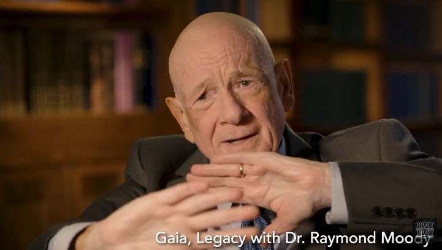

Cases of clear sightings of the ghost of the deceased are not evidence of "life after death". Here's why.
Preface
- First, I will discuss a video in which Raymond Moody testifies that he witnessed the ghost of his grandmother as if she were still alive, even though she is already deceased.
- Raymond Moody is well known for his research on near-death experiences and his best-selling book, "Life After Life. Therefore, his testimony is not surprising.
- He assumes that the deceased's "life after death" is real and considers these sightings as strong evidence for it.

Summary
- 9:40...
- My grandmother did not appear to me as a hazy ghostly figure, but as clearly as if she were a normal, living person. I saw a halo around her. I also heard her voice.
Auto-generated voice transcription
▼Click to expand
i saw my deceased
09:43
grandmother
09:45
as vividly as i have seen any other
09:48
person
09:50
i felt her presence i heard her voice
09:56
and to this day i'm still startled by
09:59
that i mean i can't deny
10:01
my experience it was completely real
10:05
to me when people have an apparition of
10:10
the deceased one of the things that they
10:13
often describe
10:14
is how natural it seems i think if
10:17
you're just sitting abstractly and
10:19
saying that
10:20
aunt ruth had a visit from aunt jane
10:23
last night
10:24
that you would think that that must be
10:26
something totally extraordinary and out
10:28
of the order of anything we experience
10:31
but what people say is no this is
10:33
completely
10:34
natural the naturalness of it is
10:37
is one thing that people
10:40
experience and i can talk about that
10:43
from my own
10:44
experience that i realized full well
10:48
that my grandmother was dead
10:51
and i guess i could have abstractly
10:54
realized that there's something very
10:56
paradoxical in that situation
10:58
but in terms of the encounter that i had
11:01
with my grandmother
11:03
it was completely natural because number
11:06
one
11:07
it was like all her neuroses were gone
11:11
it's it's like she acknowledged them in
11:15
some way that that's how i used to be
11:17
with a little bit of humor in her eyes
11:20
but also
11:21
that that's something she left behind
11:26
and so it was just
11:29
i was talking with my grandmother and
11:31
she was dead
11:32
and i was completely awake
11:36
and another very odd thing about it was
11:40
that when i looked at her she looked
11:43
like a
11:44
just a physical person
11:48
except that there was a light
11:51
just around her
11:56
not like a light that i would experience
11:59
here but
12:00
is very vibrant in energy emanation
12:06
and that in a way that i can't very just
12:10
i can't describe very well it was like
12:12
she was indented
12:14
right that she was pushed back from the
12:16
physical framework in a way and that
12:18
that's what i was seeing is this
12:21
energy line
video(33:35)
When Spirits Cross Over… They Will Try Every Method Possible To Connect with You
My view 1
- There are countless similar testimonies (A) of close and clear sightings of the deceased. I don't think all of them are fabricated stories. Most of them are probably real experiences. However, such cases are not evidence that the deceased existed in some form after death. This is because the doppelganger is a clear disproof of this.
- There are also countless testimonies (B) of up-close and clear sightings of doppelgangers (*1). Therefore, it is unreasonable to claim that B is an illusion or misidentification, but A is the real thing. In the case of a doppelganger, the doppelganger is a copy of a living person that is witnessed by the himself/herself or by another person, so of course the witnessing cannot be evidence that the subject person "exists in some form even after death.
- There is no significant difference in specific observations between A and B. It would be unreasonable to say that A is evidence of postmortem existence and B is not.
- Rather, we should consider that the phenomenon A and the phenomenon B are generated by the same mechanism.
- In response to the above rebuttal using the doppelganger as a specific example, Raymond Moody and the proponents of "life after death" would argue as follows.
- Both A and B are the same in that they are manifestations of "copies of beings. Therefore, in the same sense that the doppelganger in B is a manifestation of a real person, the ghost of the deceased in A is a manifestation of a copy of the deceased in the afterlife..., this should be the argument.
- However, such an argument can be easily disproved by the numerous Slender Man sightings(*2).
- The Slender Man is a fictional entity that was created and therefore does not exist. Many people have witnessed the existence of this fiction.
- Furthermore, there are cases such as "The Philip Experiment"(*3) in which a fictional ghost is summoned.
- The following testimonials by well-known author Alan Moore are also available.
Nick Redfern : The writer's experience of meeting the characters he created in the cafeteria. (in progress: Part 4) (2019-02-08)
- The list of other examples of manifestations of "fictional existence" is endless, including the following.
The protagonist of the cartoon appeared by the bed. (2018-11-28)
Jordan Maxwell : Six giant pterodactyls were spotted over Los Angeles. (in progress: Part 2) (2019-01-31)
- In light of these cases, so-called ghost sightings should not be regarded as confirmation of "life after death," but rather as an example of the manifestation of "fictional existence."